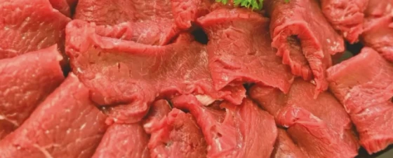

Carni
Per la cucina di tutti i giorni e per le occasioni.
Chiedi per il ritiro su WhatsApp (si apre in una nuova scheda)Salumée · Macelleria · Bellinzona & Claro
Il banco della macelleria: si sceglie guardando e si chiede a chi lo prepara. Scrivici prima e passi a ritirare.
Prosciutti al banco
Scegli un prosciutto per guardarlo da vicino.
Il Gigante
Varietà, stagionatura e provenienza: chiedi al banco.
Immagini illustrative. Selezione da confermare.
Chiedi per il ritiro su WhatsApp (si apre in una nuova scheda)Carni e specialità
Carni, salumi, grigliate e specialità: cosa c’è oggi lo sai al banco, a Bellinzona o a Claro. Scrivi prima per il ritiro e il negozio ti conferma.

Per la cucina di tutti i giorni e per le occasioni.
Chiedi per il ritiro su WhatsApp (si apre in una nuova scheda)Da tagliare al momento, come i prosciutti del banco.
Chiedi per il ritiro su WhatsApp (si apre in una nuova scheda)Per la griglia: dicci per quante persone.
Chiedi per il ritiro su WhatsApp (si apre in una nuova scheda)Preparazioni del banco.
Ordina
Il ritiro apre una bozza di messaggio su WhatsApp: la controlli e la invii tu. Il negozio ti conferma disponibilità, sede e orario. Nessun pagamento online.
Dove siamo
Macelleria · Paninoteca
Indirizzo
Viale Stazione, 6500 Bellinzona
Orari
Macelleria · Salumeria
Indirizzo
Via alla Stazione 3, 6702 Claro
Orari
Gli orari di Claro non sono indicati qui: chiedi su Instagram (si apre in una nuova scheda).